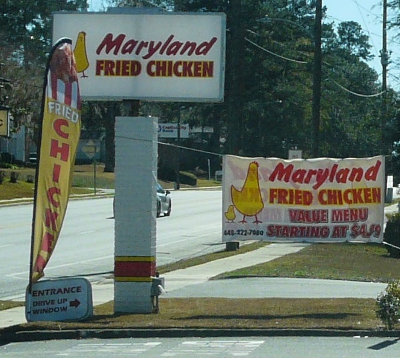
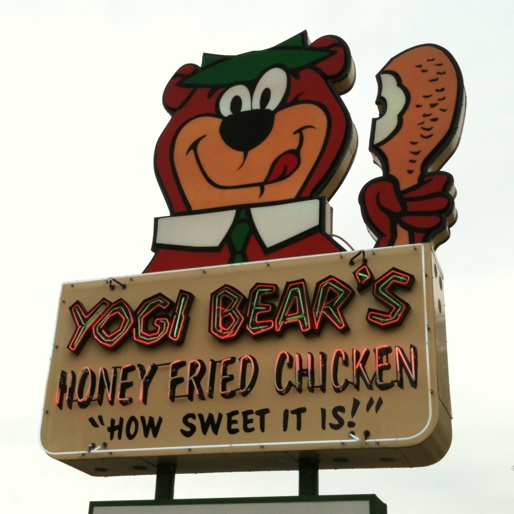

a signChicken shack signs
also: fried chicken signs · wing counter signage

The sign over a wing or fried-chicken counter is a working document. It has to be readable from a car at thirty miles an hour, name the shop, say CHICKEN, and usually price something. It comes in two families that overlap: brush-lettered paint, on plywood, on stucco, on the window glass itself; and the internally lit plastic box with changeable letters underneath. The cartoon bird is optional and very common. Almost none of it is signed, almost all of it is made locally, and it is replaced rather than restored, which is why the record of it is photographic.
What the sign has to do
Four jobs, in order of size. Say the name. Say CHICKEN, or WINGS, in the largest letters on the panel — because the category sells before the name does. Price something, usually one combination, because a price is what makes a driver slow down. Point: an arrow, a hand, or an ORDER HERE over the window.
Inference — the hierarchy is why so many of these signs look alike across cities that share nothing else. The constraints are the same in Chicago, Atlanta, Nashville and Washington, and they produce the same layout.
Brush and enamel
Tradition holds — the hand-painted counter sign is sign-painter's work: one-shot enamel, a lettering quill, a chalk snap line, and a shop's name laid out to fill the board rather than to fit a typeface. The tells are the ones the trade knows — brush-modulated strokes, letters that widen where the space allows, a drop shadow painted in a second pass, and spacing decided by eye.
The same hand usually does the menu board inside: the list over the counter, the prices painted and then repainted over as they move, so an old price shows through a new one. That layering is the only dated thing in most of these shops.
The backlit box
The illuminated plastic-faced cabinet arrived with the postwar strip and did not leave. A translucent face, fluorescent tubes behind it, the shop's name silkscreened or vinyl-cut onto the plastic, and beneath it a changeable-copy reader board with black letters slid into tracks.
It is the cheapest way to be visible after dark, which is when a wing counter does much of its business, and the reader board gives a shop something it cannot get any other way: copy it can change this afternoon. WINGS 10 PC, or the specials, or a message about the football.
The bird
A chicken drawn as a character — upright, often wearing a chef's hat or an apron, sometimes carrying a tray, frequently pointing at the shop's own name. Tradition holds — the joke is old and untroubled: the bird recommends its own cooking.
It shares its grammar with the rooster weathervane and with barbecue's pig: an animal rendered as a sign for the place that sells it, drawn friendly rather than lifelike, and used as a mark a customer can recognise before reading a word.
Where the old ones survive
Chiefly in two public photographic collections, both at the Library of Congress and both public domain, which is why this site can point at them.
John Margolies spent decades photographing American roadside architecture; his chicken signs on Wikimedia Commons include a 1979 chicken sign in El Paso, Texas, Cohen's Chicken House in Junction City, Kansas, Dario Chicken In-The Box in Rutherfordton, North Carolina, and the Chicken In the Rough restaurant sign on Route 11 in New Market, Virginia. Carol M. Highsmith's Library of Congress work covers the same ground later, including a Lucy's Fried Chicken sign on Burnet Road in Austin, Texas, photographed in April 2014.
Inference — the collections skew to what a photographer driving a highway could see. Counter signs on a city block, inside a neighbourhood, photograph worse and survive in the record less.
What gets made now
Vinyl cut on a plotter and applied to an acrylic face. Channel letters in aluminium with LED modules behind them, which replaced neon on cost rather than on looks. Full-colour printed banners for a new flavour, zip-tied over the old sign and left up for years. Menu boards as backlit translucent prints in a rail, so one panel can be swapped when a price moves.
The hand-painted window is not gone. It persists where a shop's landlord will not permit a cabinet, where the budget is a weekend, and where a shop wants to look like it has been there longer than it has.
Reading one before you go in
Tradition holds — the sign tells you the shop's shape. An ORDER HERE window with a speaker means no dining room. Prices painted rather than printed mean they do not change often. A reader board with three different letter heights means the letters ran out. Hours hand-lettered on the glass, rather than printed on a decal, usually means the hours are the owner's and negotiable.
The particulars
| kind | sign |
|---|---|
| region | The United States, Chicago, Washington, D.C., The American South, Nashville |
| confidence | medium · needs verification · updated 2026-09-16 |
Who it runs with
Who talks about it
Pictures
{kind=link}


{kind=link}

{kind=link}

{kind=link}
Where we got it
- Wikimedia Commons file search (MediaWiki API, action=query&list=search, namespace 6) · link
- Commons:Licensing · link
Where it came from: Cited a source we name · Harvested pulled from an open dataset · Tradition what the tradition says, hedged · Inference this project's reasoning · Field somebody stood there. This record as JSON.